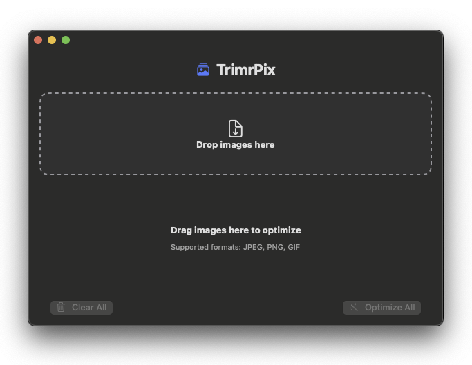

Optimize your images with high quality and simple drag & drop. Modern SwiftUI app with intelligent compression. Free image optimizer for macOS that reduces file sizes by up to 80% while maintaining visual quality.

Everything you need for image optimization
Supports JPEG, PNG, GIF, WebP, and AVIF. Optimize all your images in one place.
Optimize hundreds of images simultaneously with intelligent concurrent processing.
Configurable quality (60%-95%) with presets: Low, Medium, High, and Custom.
See before/after file sizes and savings percentage with live updates.
Automatically optimize new images added to a monitored folder.
Automatic saving in the same folder or optionally overwrite originals.
Modern UI development
Efficient image processing
Modern Swift concurrency
Clean code structure
TrimrPix supports JPEG, PNG, GIF, WebP, and AVIF formats. You can optimize all these formats with the same simple drag & drop interface.
File size reduction depends on the original image and compression settings. Typically, you can achieve 30-80% reduction while maintaining high visual quality.
Yes, TrimrPix is completely free and open source, released under the MIT License. You can download and use it without any restrictions.
Yes! TrimrPix supports batch processing, allowing you to optimize hundreds of images simultaneously with intelligent concurrent processing.
TrimrPix requires macOS 15.2 or later. It's built with modern SwiftUI and takes advantage of the latest macOS features.
Yes! TrimrPix includes a Watch Folder feature that automatically optimizes new images added to a monitored folder, perfect for automated workflows.
Download TrimrPix for free and get started today